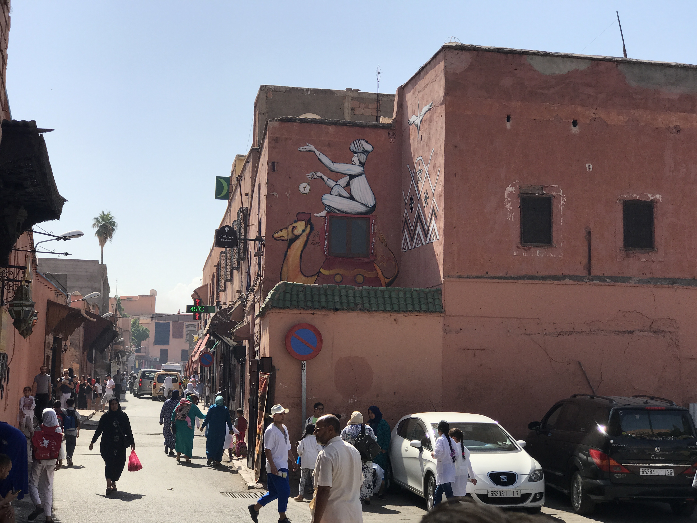

Afrika
Marokko
Tauch mit mir in die marrokanische Welt ein...


Marrakesch
Jeden Morgen um Punkt 6:00 hört man durch die Lautsprecher der Stadt das erste Gebet des Tages. Als wir dann schon wach waren, sind wir aus der Haustüre geschlendert und haben uns um die Ecke frisches Brot und Pitas geholt.Gewürze
Der Djemaa-el-Fna-Platz im Zentrum von Marrakesch ist voll mit den speziellsten Gewürzen. Vor allem stechen einem dirket die knalligen Farben ins Auge. Bei uns im Riad haben unsere Köche mit diesen Gewürzen gekocht und es war ein ganz neuer Geschmack, den ich noch nicht kannte.


Das war unser Riad...